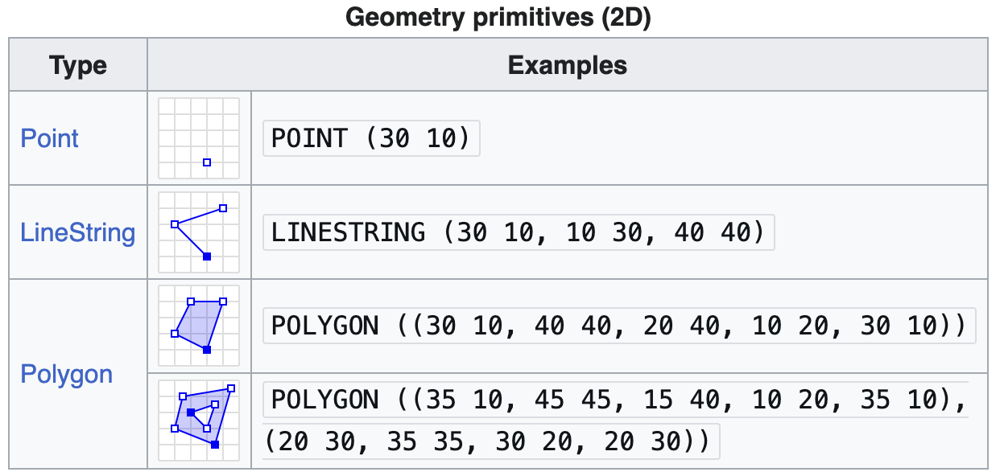
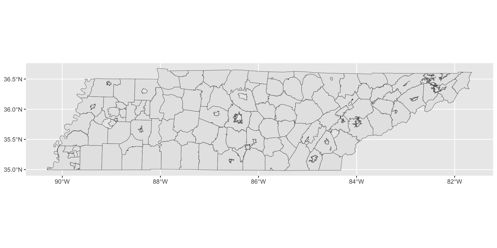
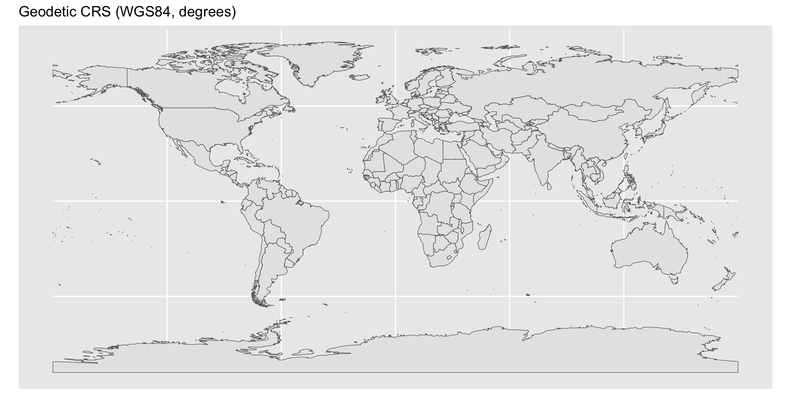
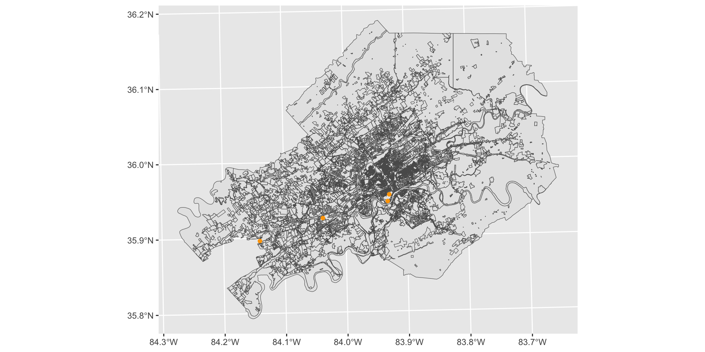

Week 12 - STEM 691
Static Maps
Weekly Check In/
Download .zip
Start Recording
Today’s Agenda
- Weekly Check In
- Polygon maps (
geom_polygon()) - Vector spatial data and simple features (
geom_sf()) - Finding geometries: tigris and
st_read() - Creating choropleth maps
- Layering geoms
- Collaborative Practice
- Looking Ahead
Norms
| In person norms | And also, for online learning… |
|---|---|
| Be fully present to each other & the work. | Keep your video on when possible. In large groups, mute your microphone when not talking. Close/mute/minimize other apps and devices to avoid distraction. |
| Assume positive intent & also take responsibility for the impact you have. | Remember online interaction masks even more of the full story. Notice when you are making assumptions, and seek information to check them. |
| Embrace collaboration. | Use the gallery view so you can see everyone. Use breakout groups as an opportunity to collaborate. |
| Be open to learning and accept non-closure. | Expect the inevitable technical glitches and learning curves. Exercise patience with one another. |
| Be aware of when to step up and step back. When stepping back, do so as an active listener. | Try out different modes of participation. Step back by making space for others to engage in these. |
| Land your plane–get to the point you intended. | We all know how hard it is to be talked at, especially in a Zoom session, so let’s keep it to a minimum. |
Mapping with ggplot2
Making maps
Map making — the art of cartography — is an ancient skill involving communication, attention to detail, and an element of creativity.

Visualizing data with maps
In addition to being fun and creative, cartography also has important practical applications. A carefully crafted map can be the best way of visualizing data.

Visualizing data with maps

Polygon maps
The {maps} package
The {maps} package contains many outlines of continents, countries, states, and counties. It’s not very accurate or up-to-date, but is built into R.
To install {maps}, run the following:
Long/lat data with {maps}
The {maps} package can access geographic longitude/latitude data with map_data().
library(ggplot2)
library(dplyr)
nc_counties <- map_data("county", "north carolina")
head(nc_counties) long lat group order region subregion
1 -79.53800 35.84424 1 1 north carolina alamance
2 -79.54372 35.89008 1 2 north carolina alamance
3 -79.54372 35.89008 1 3 north carolina alamance
4 -79.53800 35.98175 1 4 north carolina alamance
5 -79.52081 36.23385 1 5 north carolina alamance
6 -79.26298 36.23385 1 6 north carolina alamanceThe {maps} package
longis longitude. Things to the west of the prime meridian are negative.latis latitude.regionandsubregiontell what region or subregion a set of points surrounds.groupcontrols (among other things) whether adjacent points should be connected by lines. If they are in the same group, then they get connected, but if they are in different groups then they don’t.- Having points in different groups means that ggplot “lifts the pen” when going between them.
long lat group order region subregion
1 -79.53800 35.84424 1 1 north carolina alamance
2 -79.54372 35.89008 1 2 north carolina alamance
3 -79.54372 35.89008 1 3 north carolina alamance
4 -79.53800 35.98175 1 4 north carolina alamance
5 -79.52081 36.23385 1 5 north carolina alamance
6 -79.26298 36.23385 1 6 north carolina alamancePlotting long/lat with geom_point()
We can plot long/lat coordinates with geom_point().
coord_quickmap()adjusts the axes to ensure that longitude and latitude are rendered on the same scale
geom_polygon()
geom_polygon() “connects” the dots.
Danger of long/lat data
Warning
However, “longitude-latitude” data format is not the primary file type used in real world mapping.
Vector spatial data and simple features
Vector spatial data
- Vector spatial data is a spatial data model that represents geographic features as points, lines, and polygons
- Vector spatial data is a common file format for mapping data
- Typically, these are encoded with the simple features (sf) encoding
The {sf} package
- We can use the {sf} package to work with vector spatial data
- Install the package by running:
The {sf} package
- The {sf} package uses the class of simple feature (
sf) for vector spatial data in R - The {sf} package was designed to replace the sp package, which has been one of the most popular and powerful spatial packages in R for more than a decade
- {sf} represents vector spatial data much like a regular R data frame, but with a special column,
geometry, that represents the shape of each feature - An important benefit is its compatibility with the tidyverse packages
Inspecting objects of class sf
The {sf} package provides a simple way of storing geographic information and the attributes of the geographic units in a single dataset.
In the example below, nc is of the class sf:
Reading layer `nc' from data source
`/Library/Frameworks/R.framework/Versions/4.4-arm64/Resources/library/sf/shape/nc.shp'
using driver `ESRI Shapefile'
Simple feature collection with 100 features and 14 fields
Geometry type: MULTIPOLYGON
Dimension: XY
Bounding box: xmin: -84.32385 ymin: 33.88199 xmax: -75.45698 ymax: 36.58965
Geodetic CRS: NAD27Inspecting objects of class sf
Inspecting the object reveals its sf class:
The {sf} package
- sf objects has variable
geometryat the end, where each row represents a single simple feature geographic unit (sfg; in this case, county) - There are different types of sfgs (
POINT,LINESTRING,POLYGON,MULTIPOLYGON, etc)


The {sf} package
- An sf object is essentially a dataframe with geometric information stored as a variable (column)
Simple feature collection with 100 features and 5 fields
Geometry type: MULTIPOLYGON
Dimension: XY
Bounding box: xmin: -84.32385 ymin: 33.88199 xmax: -75.45698 ymax: 36.58965
Geodetic CRS: NAD27
First 10 features:
AREA PERIMETER CNTY_ NAME FIPS geometry
1 0.114 1.442 1825 Ashe 37009 MULTIPOLYGON (((-81.47276 3...
2 0.061 1.231 1827 Alleghany 37005 MULTIPOLYGON (((-81.23989 3...
3 0.143 1.630 1828 Surry 37171 MULTIPOLYGON (((-80.45634 3...
4 0.070 2.968 1831 Currituck 37053 MULTIPOLYGON (((-76.00897 3...
5 0.153 2.206 1832 Northampton 37131 MULTIPOLYGON (((-77.21767 3...
6 0.097 1.670 1833 Hertford 37091 MULTIPOLYGON (((-76.74506 3...
7 0.062 1.547 1834 Camden 37029 MULTIPOLYGON (((-76.00897 3...
8 0.091 1.284 1835 Gates 37073 MULTIPOLYGON (((-76.56251 3...
9 0.118 1.421 1836 Warren 37185 MULTIPOLYGON (((-78.30876 3...
10 0.124 1.428 1837 Stokes 37169 MULTIPOLYGON (((-80.02567 3...- NC has 100 counties
geom_sf()
- As of ggplot2 version 3.0, there is support for plotting simple features objects directly with the function
geom_sf() geom_sf()allows for visualizing sf objects- Conveniently,
geom_sf()automatically detects the geometry type of spatial objects stored in sf and draw maps accordingly - The underlying principles and syntax to create maps and non-spatial figures are very similar
geom_sf()

Specifying the aesthetics
Since it is a ggplot2 object, we can define aesthetics as usual, in this case, fill and color:
Finding geometries
Finding geometries
- Two major types of files for geographies:
- Shapefiles (.shp + dependencies)
- More later
- geoJSON (.geojson)
- Shapefiles (.shp + dependencies)
The {tigris} package
The {tigris} package
{tigris} is an R package that allows users to directly download and use TIGER/Line shapefiles from the US Census Bureau using R.
TIGER stands for Topologically Integrated Geographic Encoding and Referencing and include three general types of data:
- Legal entities
- States, counties, school districts, etc.
- Statistical entities
- Census groups, blocks used for statistical reporting
- Geographic features
- Roads, rivers, landmarks, etc.
The {tigris} package
tigris functions return simple features objects with a default year of 2022.
- See all options: https://github.com/walkerke/tigris
- In some cases, this subsetting is optional; in other cases, state and/or county arguments will be required.
- Note: TIGER data is well known to struggle with water features, so be cautious. There are lots of places to find good .shp files!
Tip
The ussf package handles the AK/HI problem for nationwide US mapping.
The {tigris} package
Simple feature collection with 126 features and 14 fields
Geometry type: MULTIPOLYGON
Dimension: XY
Bounding box: xmin: -90.31049 ymin: 34.98292 xmax: -81.6469 ymax: 36.67826
Geodetic CRS: NAD83
First 10 features:
STATEFP UNSDLEA GEOID NAME LSAD
1 47 00001 4700001 Hamblen County School District 00
2 47 00060 4700060 Alcoa City School District 00
3 47 00078 4700078 Fort Campbell Schools 00
4 47 02340 4702340 Lawrence County School District 00
5 47 03090 4703090 Morgan County School District 00
6 47 03180 4703180 Metropolitan Nashville Public School District 00
7 47 03390 4703390 Perry County School District 00
8 47 03420 4703420 Pickett County School District 00
9 47 04550 4704550 Wilson County School District 00
10 47 00090 4700090 Anderson County School District 00
LOGRADE HIGRADE MTFCC SDTYP FUNCSTAT ALAND AWATER INTPTLAT
1 PK 12 G5420 <NA> E 417476152 37852326 +36.2183967
2 PK 12 G5420 <NA> E 38810006 2388278 +35.8095702
3 PK 12 G5420 B E 273929183 490282 +36.5982483
4 PK 12 G5420 <NA> E 1598359119 2218403 +35.2204764
5 PK 12 G5420 <NA> E 1352439680 823018 +36.1386970
6 PK 12 G5420 <NA> E 1303999197 56424538 +36.1691287
7 PK 12 G5420 <NA> E 1074235994 20984700 +35.6637521
8 PK 12 G5420 <NA> E 422090560 29845401 +36.5593638
9 PK 12 G5420 <NA> E 1352057025 29867644 +36.1494307
10 PK 12 G5420 <NA> E 729446691 10681215 +36.1454415
INTPTLON geometry
1 -083.2660711 MULTIPOLYGON (((-83.4687 36...
2 -083.9758571 MULTIPOLYGON (((-84.02875 3...
3 -087.6003456 MULTIPOLYGON (((-87.8021 36...
4 -087.3965460 MULTIPOLYGON (((-87.61192 3...
5 -084.6392616 MULTIPOLYGON (((-84.91415 3...
6 -086.7847898 MULTIPOLYGON (((-86.52329 3...
7 -087.8693256 MULTIPOLYGON (((-88.0435 35...
8 -085.0757410 MULTIPOLYGON (((-85.28541 3...
9 -086.2911813 MULTIPOLYGON (((-86.59536 3...
10 -084.1876563 MULTIPOLYGON (((-84.08317 3...The {tigris} package
We can plot our output from tigris using ggplot2 and geom_sf():

Reading shapefiles
Reading shapefiles
- The shapefile format is a geospatial vector data format for geographic information system (GIS) software
- The shapefile format can spatially describe vector features: points, lines, and polygons
Reading shapefiles
- The term “shapefile” is quite common, but the format consists of a collection of files with a common filename prefix, stored in the same directory
- The three mandatory files have filename extensions
.shp,.shx, and.dbf - The actual shapefile relates specifically to the
.shpfile, but alone is incomplete for distribution as the other supporting files are required
Reading shapefiles
Let’s say we want to map the Zoning districts from Knox County (available here: https://www.arcgis.com/home/item.html?id=481b8a768b20403998fb9b454f35d23b).
- We download the shapefile(s) and save it in our Week 12 folder.
- When I unpacked the folder, I renamed it to
shapefiles.

Reading shapefiles
Save all the files in the same folder (mine is “shapefiles”):

Reading shapefiles
Use the function st_read() to read the files
dsn: the path to folder in which the shapefile(s) you want to import is stored.- name of the shapefile
Reading layer `Knoxville-Knox_County_Zoning' from data source
`/Users/kelly/Documents/viz-data-using-r/week-13/shapefiles'
using driver `ESRI Shapefile'
replacing null geometries with empty geometries
Simple feature collection with 13230 features and 10 fields (with 14 geometries empty)
Geometry type: GEOMETRY
Dimension: XY
Bounding box: xmin: 2479441 ymin: 536582.7 xmax: 2663425 ymax: 680917.9
Projected CRS: NAD83(HARN) / Tennessee (ftUS)Understanding projections
- Cylindrical, conical, and planar projections are the three main types of map projections

Understanding projections
- There are many, many different projections
- Reflect different purposes and trade-offs, different regions
Understanding projections
- What projection is the file in?
Coordinate Reference System:
User input: NAD83(HARN) / Tennessee (ftUS)
wkt:
PROJCRS["NAD83(HARN) / Tennessee (ftUS)",
BASEGEOGCRS["NAD83(HARN)",
DATUM["NAD83 (High Accuracy Reference Network)",
ELLIPSOID["GRS 1980",6378137,298.257222101,
LENGTHUNIT["metre",1]]],
PRIMEM["Greenwich",0,
ANGLEUNIT["degree",0.0174532925199433]],
ID["EPSG",4152]],
CONVERSION["SPCS83 Tennessee zone (US Survey feet)",
METHOD["Lambert Conic Conformal (2SP)",
ID["EPSG",9802]],
PARAMETER["Latitude of false origin",34.3333333333333,
ANGLEUNIT["degree",0.0174532925199433],
ID["EPSG",8821]],
PARAMETER["Longitude of false origin",-86,
ANGLEUNIT["degree",0.0174532925199433],
ID["EPSG",8822]],
PARAMETER["Latitude of 1st standard parallel",36.4166666666667,
ANGLEUNIT["degree",0.0174532925199433],
ID["EPSG",8823]],
PARAMETER["Latitude of 2nd standard parallel",35.25,
ANGLEUNIT["degree",0.0174532925199433],
ID["EPSG",8824]],
PARAMETER["Easting at false origin",1968500,
LENGTHUNIT["US survey foot",0.304800609601219],
ID["EPSG",8826]],
PARAMETER["Northing at false origin",0,
LENGTHUNIT["US survey foot",0.304800609601219],
ID["EPSG",8827]]],
CS[Cartesian,2],
AXIS["easting (X)",east,
ORDER[1],
LENGTHUNIT["US survey foot",0.304800609601219]],
AXIS["northing (Y)",north,
ORDER[2],
LENGTHUNIT["US survey foot",0.304800609601219]],
USAGE[
SCOPE["Engineering survey, topographic mapping."],
AREA["United States (USA) - Tennessee - counties of Anderson; Bedford; Benton; Bledsoe; Blount; Bradley; Campbell; Cannon; Carroll; Carter; Cheatham; Chester; Claiborne; Clay; Cocke; Coffee; Crockett; Cumberland; Davidson; De Kalb; Decatur; Dickson; Dyer; Fayette; Fentress; Franklin; Gibson; Giles; Grainger; Greene; Grundy; Hamblen; Hamilton; Hancock; Hardeman; Hardin; Hawkins; Haywood; Henderson; Henry; Hickman; Houston; Humphreys; Jackson; Jefferson; Johnson; Knox; Lake; Lauderdale; Lawrence; Lewis; Lincoln; Loudon; Macon; Madison; Marion; Marshall; Maury; McMinn; McNairy; Meigs; Monroe; Montgomery; Moore; Morgan; Obion; Overton; Perry; Pickett; Polk; Putnam; Rhea; Roane; Robertson; Rutherford; Scott; Sequatchie; Sevier; Shelby; Smith; Stewart; Sullivan; Sumner; Tipton; Trousdale; Unicoi; Union; Van Buren; Warren; Washington; Wayne; Weakley; White; Williamson; Wilson."],
BBOX[34.98,-90.31,36.68,-81.65]],
ID["EPSG",2915]]Plotting the shapefile

Adding our data as .csv
Creating sf objects
- all of the map components must be in the same projection
#creating the sf object
#latitude/longitude are in EPSG: 4326 (basically the default projection) aka WGS 84
knox_sites_sf <- st_as_sf(knox_sites, coords = c("Longitude", "Latitude"), crs = 4326)
knox_sites_sfSimple feature collection with 4 features and 1 field
Geometry type: POINT
Dimension: XY
Bounding box: xmin: -84.14057 ymin: 35.89638 xmax: -83.92828 ymax: 35.955
Geodetic CRS: WGS 84
# A tibble: 4 × 2
Place geometry
* <chr> <POINT [°]>
1 My Office (-83.92828 35.955)
2 Office of Parking (-83.93091 35.94615)
3 West Town Mall (-84.03726 35.92529)
4 Costco (-84.14057 35.89638)Creating sf objects
- all of the map components must be in the same projection
#creating the sf object
#latitude/longitude are in EPSG: 4326 (basically the default projection) aka WGS 84
#knox_sites_sf <- st_as_sf(knox_sites, coords = c("Longitude", "Latitude"), crs = 4326)
#transforming the projection to match the knox_zones crs
knox_sites_sf <- st_transform(knox_sites_sf, st_crs(knox_zones_sf))
knox_sites_sfSimple feature collection with 4 features and 1 field
Geometry type: POINT
Dimension: XY
Bounding box: xmin: 2519199 ymin: 574186.2 xmax: 2581614 ymax: 596783.1
Projected CRS: NAD83(HARN) / Tennessee (ftUS)
# A tibble: 4 × 2
Place geometry
* <chr> <POINT [US_survey_foot]>
1 My Office (2581614 596783.1)
2 Office of Parking (2580904 593545.5)
3 West Town Mall (2549583 585304.2)
4 Costco (2519199 574186.2)Plotting

Choropleth Maps
Choropleth maps
Geographical heat maps, also known as choropleth maps, are one way of visualizing geographic data.

Joining spatial data - FIPS
- To make choropleths (and a lot of other maps), we often need to join data
- The Federal Information Processing Standards (FIPS) have specific codes for joining states, counties, etc.
- Also often included in datasets

Joining spatial data - FIPS
Keep all rows from
x, and all columns fromxandy. Rows inxwith no match inywill haveNAvalues in the new columns.

Joining spatial data - FIPS
Simple feature collection with 6 features and 9 fields
Geometry type: MULTIPOLYGON
Dimension: XY
Bounding box: xmin: -2356114 ymin: -1295867 xmax: 236359.5 ymax: 1565782
Projected CRS: +proj=aea +lat_1=29.5 +lat_2=45.5 +lat_0=37.5 +lon_0=-96 +x_0=0 +y_0=0 +datum=WGS84 +units=m +no_defs
# A tibble: 6 × 10
STATEFP STATENS AFFGEOID GEOID STUSPS NAME LSAD ALAND AWATER
<chr> <chr> <chr> <chr> <chr> <chr> <chr> <dbl> <dbl>
1 31 01779792 0400000US31 31 NE Nebraska 00 1.99e11 1.37e 9
2 53 01779804 0400000US53 53 WA Washington 00 1.72e11 1.26e10
3 35 00897535 0400000US35 35 NM New Mexico 00 3.14e11 7.29e 8
4 46 01785534 0400000US46 46 SD South Dakota 00 1.96e11 3.38e 9
5 48 01779801 0400000US48 48 TX Texas 00 6.77e11 1.90e10
6 06 01779778 0400000US06 06 CA California 00 4.04e11 2.05e10
# ℹ 1 more variable: geometry <MULTIPOLYGON [m]>Joining spatial data - FIPS
We can plot the states using geom_sf():
Joining spatial data - FIPS
Now, we will use data on state population counts from the 2020 Census from {tidycensus}:
#install.packages("tidycensus")
library(tidycensus)
pop_counts_2020 <- get_decennial(geography = "state",
variables = "DP1_0001C",
year = 2020,
sumfile = "dp")
head(pop_counts_2020)# A tibble: 6 × 4
GEOID NAME variable value
<chr> <chr> <chr> <dbl>
1 01 Alabama DP1_0001C 5024279
2 02 Alaska DP1_0001C 733391
3 04 Arizona DP1_0001C 7151502
4 05 Arkansas DP1_0001C 3011524
5 06 California DP1_0001C 39538223
6 08 Colorado DP1_0001C 5773714Joining spatial data - FIPS
- Note that both our sf object “states_sf” and our data frame “pop_counts_2020” have a column for the FIPS code
- What will happen if we
left_join(x,y, by = "key")the two datasets? Which object first (x)? How many observations in final object?- Keep all rows from
x, and all columns fromxandy. Rows inxwith no match inywill haveNAvalues in the new columns.
- Keep all rows from
Simple feature collection with 6 features and 9 fields
Geometry type: MULTIPOLYGON
Dimension: XY
Bounding box: xmin: -2356114 ymin: -1295867 xmax: 236359.5 ymax: 1565782
Projected CRS: +proj=aea +lat_1=29.5 +lat_2=45.5 +lat_0=37.5 +lon_0=-96 +x_0=0 +y_0=0 +datum=WGS84 +units=m +no_defs
# A tibble: 6 × 10
STATEFP STATENS AFFGEOID GEOID STUSPS NAME LSAD ALAND AWATER
<chr> <chr> <chr> <chr> <chr> <chr> <chr> <dbl> <dbl>
1 31 01779792 0400000US31 31 NE Nebraska 00 1.99e11 1.37e 9
2 53 01779804 0400000US53 53 WA Washington 00 1.72e11 1.26e10
3 35 00897535 0400000US35 35 NM New Mexico 00 3.14e11 7.29e 8
4 46 01785534 0400000US46 46 SD South Dakota 00 1.96e11 3.38e 9
5 48 01779801 0400000US48 48 TX Texas 00 6.77e11 1.90e10
6 06 01779778 0400000US06 06 CA California 00 4.04e11 2.05e10
# ℹ 1 more variable: geometry <MULTIPOLYGON [m]>Joining spatial data - FIPS
- Note that the FIPS code in each has a different variable name:
Simple feature collection with 6 features and 9 fields
Geometry type: MULTIPOLYGON
Dimension: XY
Bounding box: xmin: -2356114 ymin: -1295867 xmax: 236359.5 ymax: 1565782
Projected CRS: +proj=aea +lat_1=29.5 +lat_2=45.5 +lat_0=37.5 +lon_0=-96 +x_0=0 +y_0=0 +datum=WGS84 +units=m +no_defs
# A tibble: 6 × 10
STATEFP STATENS AFFGEOID GEOID STUSPS NAME LSAD ALAND AWATER
<chr> <chr> <chr> <chr> <chr> <chr> <chr> <dbl> <dbl>
1 31 01779792 0400000US31 31 NE Nebraska 00 1.99e11 1.37e 9
2 53 01779804 0400000US53 53 WA Washington 00 1.72e11 1.26e10
3 35 00897535 0400000US35 35 NM New Mexico 00 3.14e11 7.29e 8
4 46 01785534 0400000US46 46 SD South Dakota 00 1.96e11 3.38e 9
5 48 01779801 0400000US48 48 TX Texas 00 6.77e11 1.90e10
6 06 01779778 0400000US06 06 CA California 00 4.04e11 2.05e10
# ℹ 1 more variable: geometry <MULTIPOLYGON [m]>Joining spatial data - FIPS
- This is how you join the
states_sfandpop_counts_2020together:
joined_state_data_sf <- left_join(states_sf, pop_counts_2020, by = c("STATEFP" = "GEOID"))
head(joined_state_data_sf)Simple feature collection with 6 features and 12 fields
Geometry type: MULTIPOLYGON
Dimension: XY
Bounding box: xmin: -2356114 ymin: -1295867 xmax: 236359.5 ymax: 1565782
Projected CRS: +proj=aea +lat_1=29.5 +lat_2=45.5 +lat_0=37.5 +lon_0=-96 +x_0=0 +y_0=0 +datum=WGS84 +units=m +no_defs
# A tibble: 6 × 13
STATEFP STATENS AFFGEOID GEOID STUSPS NAME.x LSAD ALAND AWATER
<chr> <chr> <chr> <chr> <chr> <chr> <chr> <dbl> <dbl>
1 31 01779792 0400000US31 31 NE Nebraska 00 1.99e11 1.37e 9
2 53 01779804 0400000US53 53 WA Washington 00 1.72e11 1.26e10
3 35 00897535 0400000US35 35 NM New Mexico 00 3.14e11 7.29e 8
4 46 01785534 0400000US46 46 SD South Dakota 00 1.96e11 3.38e 9
5 48 01779801 0400000US48 48 TX Texas 00 6.77e11 1.90e10
6 06 01779778 0400000US06 06 CA California 00 4.04e11 2.05e10
# ℹ 4 more variables: geometry <MULTIPOLYGON [m]>, NAME.y <chr>,
# variable <chr>, value <dbl>Plotting spatial data
- Add the data as an aesthetic in your ggplot object with
fill() - Be sure to include in your
aes()since it’s referring to data

Layering geoms (a review)
Plotting points (State Capitals)
Let’s say we have another dataset with longitude/latitude data for each state capital city center:
Simple feature collection with 6 features and 12 fields
Geometry type: MULTIPOLYGON
Dimension: XY
Bounding box: xmin: -2356114 ymin: -1295867 xmax: 236359.5 ymax: 1565782
Projected CRS: +proj=aea +lat_1=29.5 +lat_2=45.5 +lat_0=37.5 +lon_0=-96 +x_0=0 +y_0=0 +datum=WGS84 +units=m +no_defs
# A tibble: 6 × 13
STATEFP STATENS AFFGEOID GEOID STUSPS NAME.x LSAD ALAND AWATER
<chr> <chr> <chr> <chr> <chr> <chr> <chr> <dbl> <dbl>
1 31 01779792 0400000US31 31 NE Nebraska 00 1.99e11 1.37e 9
2 53 01779804 0400000US53 53 WA Washington 00 1.72e11 1.26e10
3 35 00897535 0400000US35 35 NM New Mexico 00 3.14e11 7.29e 8
4 46 01785534 0400000US46 46 SD South Dakota 00 1.96e11 3.38e 9
5 48 01779801 0400000US48 48 TX Texas 00 6.77e11 1.90e10
6 06 01779778 0400000US06 06 CA California 00 4.04e11 2.05e10
# ℹ 4 more variables: geometry <MULTIPOLYGON [m]>, NAME.y <chr>,
# variable <chr>, value <dbl># A tibble: 6 × 4
name description latitude longitude
<chr> <chr> <dbl> <dbl>
1 Alabama Montgomery 32.4 -86.3
2 Alaska Juneau 58.3 -134.
3 Arizona Phoenix 33.4 -112.
4 Arkansas Little Rock 34.7 -92.3
5 California Sacramento 38.6 -121.
6 Colorado Denver 39.7 -105. Add to map
- Let’s plot them
- Oh no!
state_capitals_sf <- st_as_sf(state_capitals, coords = c("longitude", "latitude"), crs = 4326)
ggplot() +
geom_sf(data=joined_state_data_sf, aes(fill = value))+
geom_sf(data=state_capitals_sf, shape =8, color="limegreen" )+
scale_fill_viridis(option = "magma", labels = scales::comma, direction = -1)Add to map
- {ussf} fixes the AK/HI problem for nationwide US mapping, but it isn’t fixed in our state_capitals data
- This is fixable (but complicated). Contact me if you need to address this issue in your final project.
Collaborative Practice
Grad certificate
The University of Tennessee, Knoxville, offers an online graduate certificate in Educational Data Science for students interested in digital data collection, analysis, visualization, and more in educational settings. The certificate can be added to current graduate students’ studies or pursued as a stand-alone certificate for graduate-level students.
Looking Ahead
Looking Ahead
- Assignment: Mapping ACS & Census Data
- Readings:
Other data sources
- The USAboundaries package, https://github.com/ropensci/USAboundaries contains state, county and zip code data for the US
- The rnaturalearth package (South 2017) bundles up the free, high-quality data from https://naturalearthdata.com/
- The osmar package, https://cran.r-project.org/package=osmar wraps up the OpenStreetMap API so you can access a wide range of vector data including individual streets and buildings
Sources of .shp files
UTK Educational Data Science